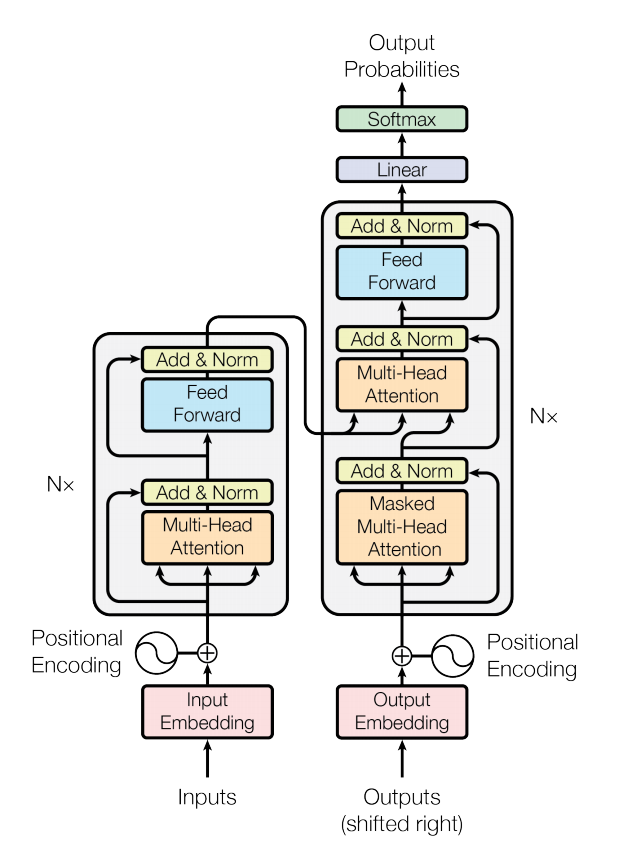

论文阅读：Attention Is All You Need
前言
谷歌团队提出的用于生成词向量的BERT算法在NLP的11项任务中取得了效果的大幅提升，堪称2018年深度学习领域最振奋人心的消息。而BERT算法的最重要的部分便是本文中提出的Transformer的概念。
Transformer中抛弃了传统的CNN和RNN，整个网络结构完全是由Attention机制组成。更准确地讲，Transformer由且仅由self-Attenion和Feed Forward Neural Network组成。一个基于Transformer的可训练的神经网络可以通过堆叠Transformer的形式进行搭建，作者的实验是通过搭建编码器和解码器各6层，总共12层的Encoder-Decoder，并在机器翻译中取得了BLEU值的新高。
作者采用Attention机制的原因是考虑到RNN（或者LSTM，GRU等）的计算是顺序的，也就是说RNN相关算法只能从左向右依次计算或者从右向左依次计算，这种机制带来了两个问题：
- 时间片 $t$ 的计算依赖 $t-1$ 时刻的计算结果，这样限制了模型的并行能力；
- 顺序计算的过程中信息会丢失，尽管LSTM等门机制的结构一定程度上缓解了长期依赖的问题，但是对于特别长期的依赖现象, LSTM依旧无能为力。
Transformer的提出解决了上面两个问题，首先它使用了Attention机制，将序列中的任意两个位置之间的距离缩小为一个常量 (相似度)；其次它不是类似RNN的顺序结构，因此具有更好的并行性，符合现有的GPU框架。论文中给出Transformer的定义是：
Transformer is the first transduction model relying entirely on self-attention to compute representations of its input and output without using sequence aligned RNNs or convolution.
Transformer 详解
High-level Transformer
论文中的验证 Transformer 的实验是基于机器翻译的，下面以机器翻译为例子详细剖析 Transformer 的结构，在机器翻译中，Transformer 可概括为下图：
 Transformer 的本质是一个 Encoder-Decoder 的结构，那么上图也可以表示为下面的结构：
Transformer 的本质是一个 Encoder-Decoder 的结构，那么上图也可以表示为下面的结构：
如论文中所设置的，编码器由6个编码block组成，同样解码器是6个解码block组成。与所有的生成模型相同的是，编码器的输出会作为解码器的输入，如图所示：

在 Transformer 的 Encoder 中，数据首先会经过一个叫做 self-attention 的模块得到一个加权之后的特征向量 $Z$，这个 $Z$ 便是下面公式中的 $Attention(Q,K,V)$：
$$
\text{Attention}(Q,K,V)=\text{softmax}(\frac{QK^T}{\sqrt{d_k}})V
$$
得到 $Z$ 之后，他会被送进 encoder 的下一个模块，前馈神经网络中。这个全连接有两层，第一层的激活函数是 ReLU，第二层是一个线性激活函数，可以表示为：
$$
\text{FFN}(Z)=\max (0,ZW_1+b_1)W_2+b_2
$$
Encoder 的结构如下图：

Decoder 的结构如下图右方所示，它和 Encoder 的不同之处在于 Decoder 多了一个 Encoder-Decoder Attention，两个 Attention 分别用于计算输入和输出的权值：
- Self-Attention：当前翻译和已经翻译的前文之间的关系；
- Encoder-Decnoder Attention：当前翻译和编码的特征向量之间的关系。

输入编码
首先通过 Word2Vec 等词嵌入方法将输入语料转化为特征向量，论文中使用的词嵌入的维度为 $d_{model}=512$。

在最底层的block中， $x$ 将直接作为Transformer的输入，而在其他层中，输入则是上一个block的输出。

Self-Attention
Self-Attention 是 Transformer 最核心的内容。下面我们举例进行讲解，比如有一个我们想要翻译的句子：
1 | |
通过加权之后可以得到类似下图的加权情况：

在 Self-attention 中，每个单词有3个不同的向量，分别是 Query 向量 (Q), Key 向量 (K) 和 Value 向量 (V)，长度均是64。它们是通过3个不同的权值矩阵由嵌入向量 $X$ 乘以三个不同的权值矩阵 $W^Q,W^K,W^V$ 得到，其中三个矩阵的尺寸也是相同的。均是 $512\times 64$。
$\text{q}_1=X_1W^Q,\text{k}_1=X_1W^K,\text{v}_1=X_1W^V$
为了理解 Query, Key, Value 的具体意义，我们继续往下看。Attention 的计算方法，整个过程可以分成 7 步。
1、把输入单词转化为嵌入向量；
2、根据嵌入向量得到 $\text{q,k,v}$ 三个向量；
3、为每个向量计算一个 score: $score=\text{q}\cdot \text{k}$；
4、为了梯度的稳定，Transformer 使用了 score 归一化，即除以 $\sqrt{d_k}$；
5、对 score 施加 softmax 激活函数；
6、softmax 点乘 Value 值 $\text{v}$，得到加权的每个输入向量的评分 $\text{v}$；
7、相加得到最终的输出结果 $z=\sum v$。
上面的步骤可以表示为下图的形式：

实际计算过程是分batch，采用基于矩阵的计算方式，论文中的 Q,K,V 的计算方式如图：

然后得到的矩阵再进行之前 softmax 计算 score 的步骤：

在self-attention需要强调的最后一点是其采用了残差网络中的short-cut结构，目的当然是解决深度学习中的退化问题，得到的最终结果如图：
Multi-Head Attention
Multi-Head Attention 相当于是 $h$ 个 Attention 模块的集合，这里以 $h=8$ 为例，输入一个句子，然后把每个词进行编码，然后分别输入到8个 Attention 中，最后将得到的 $Z$ 矩阵 concat 起来乘以权重 $W^O$，如下图所示：

Encoder-Decoder Attention
在解码器中，Transformer block比编码器中多了个encoder-cecoder attention。在encoder-decoder attention中， $Q$ 来自于解码器的上一个输出， $K$ 和 $V$ 则来自于与编码器的输出。
由于在机器翻译中，解码过程是一个顺序操作的过程，也就是当解码第 $k$ 个特征向量时，我们只能看到第 $k-1$ 及其之前的解码结果，论文中把这种情况下的 multi-head attention 叫做 masked multi-head attention。
Full Transformer
一个完整的网络结构便是 Encoder 和 Decoder 的堆叠（各 $N$ 个, $N=6$），如图所示：
位置编码
截止目前为止，我们介绍的Transformer模型并没有捕捉顺序序列的能力，也就是说无论句子的结构怎么打乱，Transformer都会得到类似的结果。换句话说，Transformer只是一个功能更强大的词袋模型而已。
为了解决这个问题，论文中在编码词向量时引入了位置编码（Position Embedding）的特征。具体地说，位置编码会在词向量中加入了单词的位置信息，这样Transformer就能区分不同位置的单词了。
那么怎么编码这个位置信息呢？常见的模式有：a. 根据数据学习；b. 自己设计编码规则。在这里作者采用了第二种方式。通常位置编码是一个长度为 $d_{model}$ 的特征向量，这样便于和词向量进行单位加的操作。

论文给出的编码公式如下：
$$
\begin{aligned}
PE(pos,2i)&=\sin (pos/10000^{2i/d_{model}})\
PE(pos,2i+1)&=\cos(pos/10000^{2i/d_{model}})
\end{aligned}
$$
其中，$pos$ 表示单词的位置，$i$ 表示单词的维度。
作者这么设计的原因是考虑到在NLP任务中，除了单词的绝对位置，单词的相对位置也非常重要。
根据公式
$$
\sin(\alpha+\beta)=\sin\alpha\cos\beta+\cos\alpha\sin\beta\
cos(\alpha+\beta)=\cos\alpha\cos\beta-sin\alpha\sin\beta
$$
这表明位置 $k+p$ 的位置向量可以表示为位置 $k$ 的特征向量的线性变化，这为模型捕捉单词之间的相对位置关系提供了非常大的便利。（？没有特别搞懂这个，应该是 Linear Combination，而不是线性变化）
总结
优点：
（1）虽然Transformer最终也没有逃脱传统学习的套路，Transformer也只是一个全连接（或者是一维卷积）加Attention的结合体。但是其设计已经足够有创新，因为其抛弃了在NLP中最根本的RNN或者CNN并且取得了非常不错的效果，算法的设计非常精彩，值得每个深度学习的相关人员仔细研究和品位。
（2）Transformer的设计最大的带来性能提升的关键是将任意两个单词的距离是1，这对解决NLP中棘手的长期依赖问题是非常有效的。
（3）Transformer不仅仅可以应用在NLP的机器翻译领域，甚至可以不局限于NLP领域，是非常有科研潜力的一个方向。
（4）算法的并行性非常好，符合目前的硬件（主要指GPU）环境。
缺点：
（1）粗暴的抛弃RNN和CNN虽然非常炫技，但是它也使模型丧失了捕捉局部特征的能力，RNN + CNN + Transformer的结合可能会带来更好的效果。
（2）Transformer失去的位置信息其实在NLP中非常重要，而论文中在特征向量中加入Position Embedding也只是一个权宜之计，并没有改变Transformer结构上的固有缺陷。